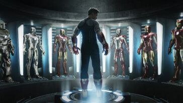
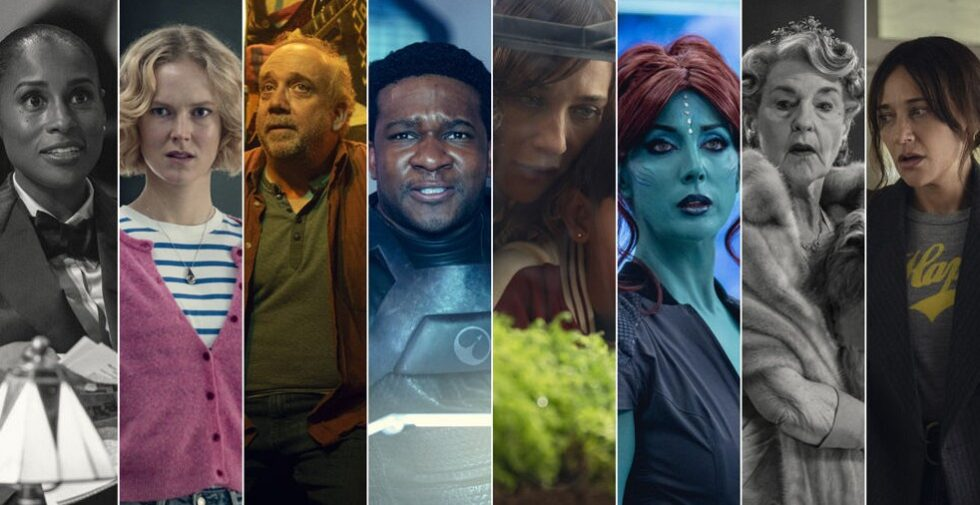
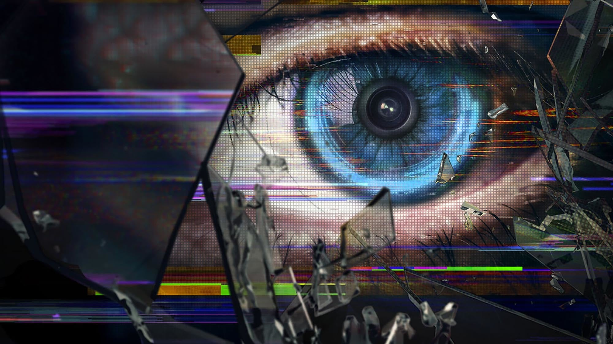
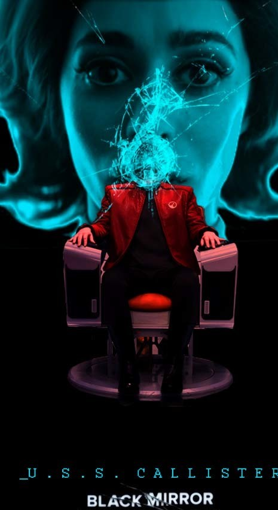

Fekete tükör
A Fekete tükör (eredeti cím: Black Mirror) brit antológia-sorozat, melynek alkotója Charlie Brooker. Különálló epizódjai az információs társadalom és a technológiai fejlődés veszélyeit mutatják be egy-egy disztópikus történetben. Minden rész eltérő szereplőgárdával rendelkezik, sőt, eltérő valóságokban játszódnak. Brooker szerint azonban "az összes epizód a mai életünket mutatja be és azt az életet, amit 10 percen belül élhetünk, ha ügyetlenek vagyunk.[1] A sorozatot a 21. század Alkonyzónájának tartják.[2] A sorozat a brit Channel 4 csatornán debütált 2011-ben. Harmadik évada a Netflix megbízásából készült és 2016. október 21-én lett világszerte elérhető az interneten.[3] Magyarországon a sorozat első két évadát az HBO mutatta be, a többi évad szinkronosan elérhető a Netflixen.[4] Két különkiadása készült: a "Fehér karácsony" még tévés bemutatóval, a "Bandersnatch" pedig a Netflixen. A sorozatot a közönség és a kritika is jól fogadta, sokan a 2010-es évek legjobb sorozatának tartják, amely, akárcsak az "Amerikai Horror Story" és "A kilences szám alatt", újra visszahozta a köztudatba az antológiákat. A "San Junipero", a "USS Callister" és a "Bandersnatch" Emmy-díjjal jutalmazott epizódok.
Cselekmény
Mivel a Fekete tükör egy antológiasorozat, ezért minden epizódja önálló cselekménnyel bír, a megtekintésük sorrendje tetszőleges lehet.[5] A cselekmény a sci-fit ötvözi a spekulatív fikcióval, szinte minden epizód a disztopikus közeljövőben játszódik, amikor egy új, az epizód bemutatásakor futurisztikus technológia kerül be az emberek mindennapjaiba. Visszatérő motívumok az adataink megszerzése, a megfigyelés, a virtuális valóságok, az individualizmus, és a fogyasztói társadalom kritikája. A legtöbb epizód történetében mindig van egy csavar is.
Nincs egységes műfaja a részeknek. Egyes epizódok a skandináv krimik stílusában készültek ("A nemzet ellensége", "Krokodil"), de vannak horror- és pszichológiai horror-epizódok ("Fekete múzeum", "A játékteszt"), és politikai szatíra ("A nemzeti himnusz") is. Vannak epizódok, amelyek könnyedebbek, mint a romantikus "San Junipero" vagy a "Striking Vipers", van romantikus komédia ("Akasszuk fel a DJ-t"), és űropera is ("USS Callister"). Emellett dráma ("Tizenötmillió jutalom"), pszichotriller, posztapokaliptikus fikció ("Fémfej") és háborús film ("A csótányirtók") is van köztük. A "Bandersnatch" némiképp kilóg a sorból, ugyanis az nem egy szigorú értelemben vett film, tekintettel arra, hogy a néző maga alakíthatja a cselekményt.
A sorozat általában negatív véleménnyel van a technikai fejlődés folyamatos hajszolásáról, ezért a legtöbb résznek negatív a befejezése. Általában azok a részek érnek véget jól, amelyekben a karakterek képesek felmérni azt, hogy a technológia mivel is jár számukra. Az első két, még tévés évaddal kapcsolatosan gyakran megfogalmazott vélemény, hogy megvalósításában "jellegzetesen brit", és csak a Netflixre felkerült részekben lett színesebb, pozitívabb a történet[6]. A hatodik évad néhány része kilóg a sorból, ugyanis ezek horror és természetfeletti elemeket tartalmaznak inkább, mint technológiaiakat.
Kapcsolat az epizódok között A későbbi részekben kezdett általánossá válni, hogy elhelyeznek különféle easter egg-eket, amelyek visszautalnak a korábbi részekre. Ilyen lett a fiktív UKN hírcsatorna vagy a Fence's Pizza étteremlánc. A figyelmes szemlélő a híradós bejátszásokban vagy a közösségi médiás felületeket átfutva is találhat utalásokat. A "Fekete múzeum" című rész ebben a rekorder, az ugyanis gyakorlatilag az összes korábbi részre tesz valamilyen utalást. Az 1964-es "Anyone Who Knows What Love Is (Will Understand)" című dal több részben is elhangzik, a "Fehér medve" című részben látható, fordított Y-ra emlékeztető szimbólum pedig többször is felbukkan.
Színészek ritkán játszanak több mint egy epizódban, és olyankor is javarászt különböző szerepekben láthatók. Aaron Paul-nak, aki a "Túl a tengeren" főszereplője, a "USS Callister" végén volt egy apró szerepe, Hannah John-Kamen Selmát játszotta a "Tizenötmillió jutalom"-ban és az újságíró Sonját "A játékteszt"-ben. Michaela Coel repülőtéri dolgozó volt a "Szabadesés"-ben és Shania a "USS Callister"-ben. Monica Dolan rendőr volt a "Smithereen"-ben, a "Loch Henry"-ben a főszereplő anyja. Daniel Lapaine Maxet játszotta "A teljes történeted"-ben és egy orvost a "Fekete múzeum"-ban. Anjana Vasan és Paapa Essiedu a "79-es démon"-ból cameo-szerepben láthatóan a "USS Callister: Into Infinity" című epizódban. Olyan, hogy egy karakter két epizódban is szerepeljen, mely ugyanazon valóságban játszódik, mindössze a "Bandersnatch" és a "Játékszer", valamint a "USS Callister" és a "USS Callister: Into Infinity" című részekben látható.
A hatodik évadtól kezdődően megjelenik a Streamberry is, mint streamingszolgáltató (a Netflix egyfajta paródiája), amely több részben is felbukkan[7].
Készítése

A sorozatot megalkotó Charlie Brooker korábban komikus forgatókönyveket írt[8], emellett játékújságíró volt a PC Zone-nál az 1990-es évek végén, sorozatkritikákat írt a The Guardian-nek, a 2000-es években pedig különféle tévés munkái is voltak[9]. 2008-ban készült el a "Hulla-ház" című, élőhalottakat is szerepeltető drámasorozata, és miközben belekezdett a "Newswipe" nevű műsorba, elhatározta, hogy antológiasorozatot fog készíteni. Fő inspirációja volt az 1960-as évek elején készített klasszikus "Alkonyzóna", az 1980-as évek elejétől vetített "Meghökkentő mesék" és a "Hammer House of Horror"[10]. A sorozat címét az Arcade Fire nevű együttes azonos című száma inspirálta, amely egy kikapcsolt elektronikus eszköz üres képernyőjére utal[11].
Brooker megfigyelte, hogy az Alkonyzóna történeteiben Rod Serling kortárs problémákat dolgozott fel, amelyek némelyike, például a rasszizmus, nagy vitákat generált, és éppen azért, hogy átjusson a korabeli cenzúrán, ezeket a kérdéseket valamilyen fiktív világban mutatta be[12]. Úgy gondolta, hogy ez ma is aktuális lenne, különösen abból az aspektusból nézve, hogy a technológia miként változtatja meg az életünket. Fontos volt, hogy a sorozat maradjon antológia, tehát minden egyes részben új színészek játszanak más és más környezetben. Eleinte felmerült az, hogy legyen valamilyen összekötő kapocs a részek között vagy akár egy narrátor, de erről végül letettek[13].
A legtöbb epizód forgatókönyvét Brooker írja. Rengeteg ötlet származott onnan, hogy a sorozat producerével, Annabel Jones-szal beszélgetett, és kidolgozott egy "mi lenne, ha" felütésű történetet, melybe valamilyen új technológia következményeit építette be. A forgatókönyvekben általában egy olyan elem van, amely hitetlenséget válthat ki a nézőben, a karakterek játéka és a történet azonban annyira hitelesek, hogy a mégoly szokatlan felütést is elfogadtatja[14].
Az első két évad során Brooker kevesebbet gondolkodott előre és többet írt, aminek következtében bizonyos történeteket újra meg újra át kellett írnia (ilyen volt a "Fehér medve" című epizód)[15]. Gondolt arra is, hogy az epizódokat bizonyos pontokon reklámok szakítják majd meg a tévében, ezért ezek előtt általában a legizgalmasabb résznél szakadt félbe a cselekmény. A harmadik évadtól kezdődően az epizódok kaptak egy keretet, hogy honnan indulnak el és hová tartanak, és a kettő közötti részt töltötte ki. Az első rész, amely a Netflix számára készült, a "San Junipero" volt, és ez fontos fordulópont volt a sorozat történetében, mert a korábbi, gyakorlatilag csak komor felütésű részek után ez könnyedebb hangvételű volt.
